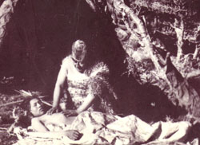

Se denomina Chamanismo al conjunto de creencias y prácticas aborígenes
tradicionales las que permiten diagnosticar y curar los males que puedan
afectar a los humanos, animales, plantas o lugares. Los chamanes poseen
técnicas y fórmulas de remedios para la curación de dichos males. Las
chamanas o chamanes trabajan sobre el universo que representa un ser con
todos sus cuerpos, en todas sus dimensiones y planos.

Por lo tanto la conexión con el alma de ese ser y con los espíritus de
todos los reinos es fundamental ya que el primer cuerpo que se enferma es
el almirez. Como la etimología indica, chamán “es La o El que sabe": una
persona que es capaz de recordar todos los códigos externos de sus
creencias, y que además las comprende y tiene los conocimientos básicos.
Los practicantes del chamanismo tienen la capacidad de controlar el tiempo,
profetizar, interpretar los sueños, usar la proyección astral y viajar a
los mundos superiores e inferiores.
Las tradiciones del chamanismo han existido en todo el mundo desde épocas
prehistóricas. El chamanismo se basa en la premisa de que el mundo visible
está impregnado por las fuerzas y los espíritus invisibles, que afectan
todas a las manifestaciones de la vida.
El chamanismo requiere conocimientos o capacidades desarrolladas del ser,
es por eso que el chamanismo no se estudia sino que se entrega por línea de
sangre y ...
en forma tradicional. Quienes lo transmitimos lo realizamos de
manera especial con una entrega de conocimiento para la que quienes buscan
aprenderlo deben haber realizado previamente sanaciones chamánicas como
atención personal.
Ver ATENCIONES PERSONALES en la página principal.
Las tribus aborígenes recuerdan el contacto con el gran espíritu y saben
cuando una niña o niño nace si tendrá las capacidades para ser chamana o
chamán. Generalmente solo existe una o un chamán dentro de un grupo de
indígenas. En la actualidad la sabiduría ancestral está siendo entregada
por línea de sangre físicamente y también en los planos del éter, para que
la continuidad de los conocimientos sea posible.
La chamana o chamán tiene también función de mediador espiritual ya que
tiene acceso al plano de los desencarnados, y muchas veces es precisa la
comunicación de algún mensaje a algún ser del mundo de los vivos. la
intervención de la chamana o chamán permite que el mensaje sea
recepcionado.
Si bien hay algunos grupos aborígenes que tienen más de un ser que practica
el chamanismo generalmente es solo un ser el que se ocupa de la diversidad
de actividades que se presenten. En los grupos que hay más de uno se
dividen las tareas, algunos guían espiritualmente a la comunidad, otros
hacen curaciones, otros reciben los bebés, otros acompañan a las almas
hasta su mayor luz luego de la muerte. Pero como antes les decía
generalmente es un solo ser el que se encarga de todo. La utilización de
tambores y otros instrumentos así como la propia voz del curador, se ponen
de manifiesto en una sanación chamánica. El uso de cristales, hierbas,
resinas también se hacen presentes en sus curaciones.
Las prácticas chamánicas de muchas culturas fueron marginadas por las
religiones que las consideraban paganas. La caza de brujas sometió a
castigos e incluso hasta la muerte misma a millones de mujeres chamanas,
las que tenían conocimientos de la curación a través de las plantas, y eran
aprisionadas por esa causa, lo importante a destacar es que esos mismos
conocimientos luego fueron la base de la farmacología actual. Por eso es
preciso recordar que la palabra brujo o bruja nos habla de un ser con
conocimientos de la naturaleza usados para la curación de la comunidad, en
este punto se iguala al término chamán.
Hoy, el chamanismo sobrevive sobre todo en pueblos indígenas. Su práctica
continúa en las tundras, las selvas, los desiertos y otras áreas rurales, y
también en ciudades, pueblos, suburbios, y aldeas de todo el mundo. Está
especialmente extendido en África, y también en Suramérica, donde existe el
llamado "chamanismo mestizo".
Entre la gente mapuche de Suramérica, sirve a la comunidad como chamán una
mujer, llamada ''Machi'', que realiza ceremonias y prepara hierbas para
curar enfermedades, expulsar demonios e influenciar sobre el tiempo y la
cosecha. Trabaja sobre los planos espirituales de cada ser.
Los "hombres medicina" navajos, conocidos como "Hatalii", utilizan varios
métodos para diagnosticar las dolencias del paciente. Usan herramientas
especiales tales como rocas cristalinas, y habilidades tales como trances,
acompañados a veces de cánticos.
Desde mi propia experiencia, ya no es necesario tomar nada para llegar a lo
más profundo de un ser, tenemos capacidades a desarrollar que nos permiten
percibir y sentir sin necesidad de ninguna sustancia inductora. Estamos
rumbo a la síntesis y a la iluminación donde todo aquello que físicamente
era necesario para llegar a un estado o para lograr una transformación ya
no es necesario. Nuestra mente y amor puede hacer las curaciones más
profundas y lograr así la iluminación planetaria.
“Soy descendiente de la raza Mapuche y fui iniciada en la sanación
chamánica, mantengo contacto con los ancestros de todas las tribus desde la
conciencia. Siento un gran respeto por todos los ancestros y agradezco su
compañía y presencia en todas y cada una de las cosas que hago para la
comunidad humana en esta Tierra”. - Federica Zosi